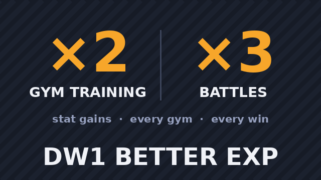
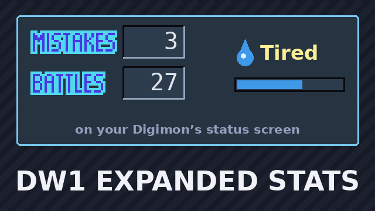
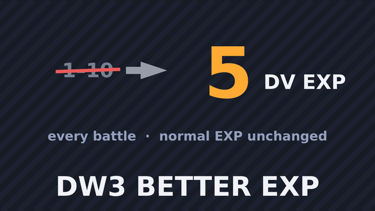
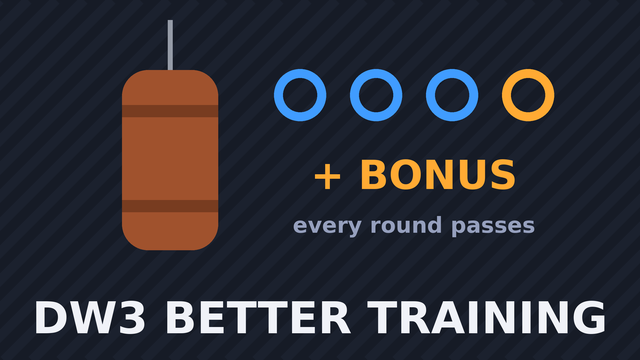
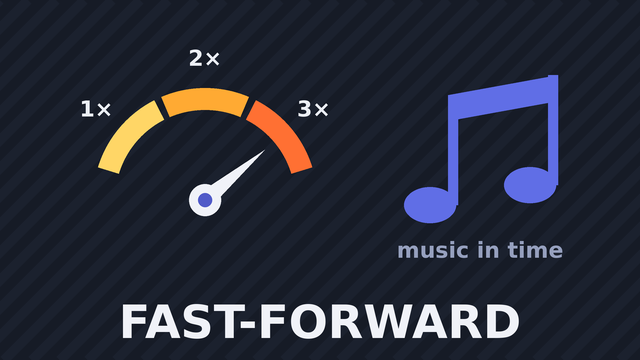
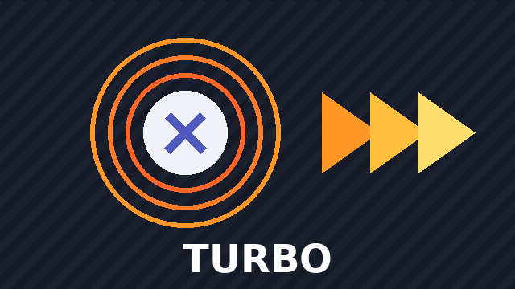

DW1 Better EXP v1.0.0 · by Jack-The-Gamer
Twice the stat gains from training at any gym, and three times the stat gains from battles.
Every mod listed here can be installed from the Mods → Find mods tab in Re:Compiled, which reads this index automatically. A mod lives either in its author's own repository or in this one. Listing is not vetting.
Want your mod here? Open a pull request adding mods/<You>@<mod-id>/ to this repository: a meta.json pointing at your repository, or the mod itself in a mod/ folder (see the README).

Twice the stat gains from training at any gym, and three times the stat gains from battles.

Adds a tiredness meter, care mistakes and battles to your Digimon's status screen.

Every won battle gives 5 DV EXP to each digivolution that earns DV EXP, instead of anywhere from 1 to 10. Normal EXP is unchanged.

Training at Leomon's gym always succeeds: every round passes, so you always reach the bonus round, and it passes too.

Press L2 and R2 together to play at double speed, again for triple speed, and a third time for normal speed. The music keeps playing at its normal speed.

Hold the turbo button (R2), then hold one or two other buttons: they are pressed and released rapidly for as long as you hold them. The game never sees the turbo button.